狙い
自由エネルギーは熱力学的なシステムの状態を評価するための物理量で、エネルギー変換や化学反応、相変化などのプロセスにおいて非常に重要な役割を果たす。この概念は、エネルギーがどれだけ「自由に」利用可能かを定量化するものである。自由エネルギーは、システムの内部エネルギーから温度とエントロピー（無秩序度）による寄与を引いたエネルギーである。Helmholtz自由エネルギー（F=U−TS）とGibbs自由エネルギー（G=U+PV−TS）がよく用いられる。ここで、Uは内部エネルギー、Tは温度、Sはエントロピー、Pは圧力、Vは体積を示す。
論文タイトル一覧
新しいフェーズフィールド法による経験的パラメータなしでの合金の相分離予測
密度汎関数理論、クラスター展開理論、ポテンシャル正規化理論を組み合わせて、合金の自由エネルギーを組成の関数として導出し、経験的パラメータに依存しないフェーズフィールド（PF）法を構築した。ニッケル-アルミニウム合金を例として、1027℃での相図と微細構造の時間発展を再現した。得られたパターンは、実験的に観察された立方体状の析出物などと非常によく一致した。本方法は原理的には任意の種類の合金に適用可能であり、新しい材料の微細構造を予測する信頼性の高い理論的ツールとなる。
Published 2019-08-01
A first-principles phase field method for quantitatively predicting multi-composition phase separation without thermodynamic empirical parameter
Bhattacharyya, et al. (Yokohama National University, Japan)
Nature Communications 10, 3451 (2019)
A first-principles phase field method for quantitatively predicting multi-composition phase separation without thermodynamic empirical parameter
Bhattacharyya, et al. (Yokohama National University, Japan)
Nature Communications 10, 3451 (2019)
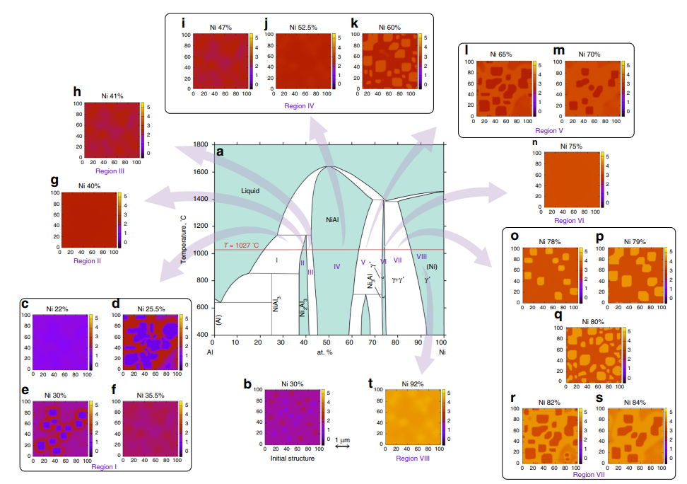
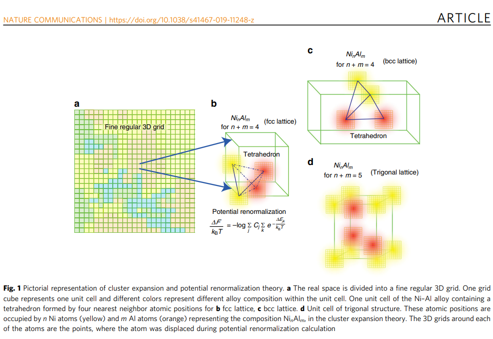
【コメント】：第一原理計算でパラメータ不要で合金の組織が予測できてしまうというもの。NIMSの佐原さんいわく現状では3元合金が限界の様です。ハイエントロピー合金はユニットセルが大きくなってしまうからかな。
【用語】フェーズフィールド(PF)法：相変化や微細構造形成などの物質の空間的な不均一性を記述する計算手法。秩序変数と呼ばれる連続関数を導入して自由エネルギーを定義し、その最小化によって系の進化を追跡する。従来のPF法では、自由エネルギーは経験的な多項式として与えられることが多い。クラスター展開理論：合金や固溶体などの無秩序系の自由エネルギーを計算するための統計力学的手法。系内の原子間相互作用を有限個の原子からなるクラスターに分割して展開し、それぞれに重み付けされたエネルギー項を導入する。クラスター展開理論では、系の組成や温度に応じて最も安定な構造や相分離状態を求めることができる。ポテンシャル正規化理論：高温で有効なアインシュタインモデルに基づいて、原子間ポテンシャルを修正する理論。高温では、原子は平衡位置から振動するが、その振動幅はポテンシャル曲率に反比例する。したがって、ポテンシャル曲率が大きい場合は振動幅が小さくなり、逆にポテンシャル曲率が小さい場合は振動幅が大きくなる。この効果を考慮して、ポテンシャルエネルギーを正規化することで、高温での自由エネルギーを改善することができる。
【手法】本研究では、密度汎関数理論によって計算されたクラスター展開理論のエネルギー項に、ポテンシャル正規化理論による補正を加えることで、合金の自由エネルギーを求めた。この自由エネルギーは、合金の組成に対して離散的な値をとる。すなわち、各格子点におけるニッケルとアルミニウムの原子数を整数として定義し、それらの関数として自由エネルギーを表した。このようにすることで、局所的な構造や組成を考慮することができる。この自由エネルギーを用いて、PF法の数値シミュレーションを行った。秩序変数として、各格子点におけるニッケルとアルミニウムの原子数密度を用いた。化学ポテンシャルは、自由エネルギーの差分と界面エネルギー項から求めた。連続性方程式とフィックの法則から、拡散方程式を導出し、時間発展を計算した。初期状態は、ニッケルとアルミニウムの不均一な分布から始めた。さまざまな合金組成に対して、PF法のシミュレーションを行い、微細構造の形成過程と最終的なパターンを観察した。得られたパターンは、実験的に報告された相図や微細構造と非常によく一致した。特に、ニッケル-アルミニウム合金の特徴的な立方体状の析出物が再現されたことは注目すべきである。
【新規性1】本研究は、合金の微細構造予測において、従来必要だった経験的パラメータを排除し、第一原理計算に基づくPF法を提案したことで、学術的な新規性がある。これにより、任意の種類の合金に対して、高い信頼性と汎用性で微細構造を予測することが可能になった。本研究は、合金の自由エネルギーを組成の離散関数として定義し、局所的な構造や組成を考慮することで、微細構造形成のメカニズムを明らかにした。特に、界面エネルギーや歪みエネルギーなどの外部パラメータを導入せずに、立方体状の析出物を再現することができたことは画期的である。
【新規性2】 経験的パラメータを排除したPF法の提案：合金の微細構造予測において、従来必要だった経験的パラメータを排除し、第一原理計算に基づくPF法を提案したことで、任意の種類の合金に対して、高い信頼性と汎用性で微細構造を予測することが可能になった。組成の離散関数としての自由エネルギーの定義：合金の自由エネルギーを組成の離散関数として定義し、局所的な構造や組成を考慮することで、微細構造形成のメカニズムを明らかにした1。特に、界面エネルギーや歪みエネルギーなどの外部パラメータを導入せずに、立方体状の析出物を再現することができたことは画期的である。PF法と第一原理計算の組み合わせによる高温領域での相図再現：密度汎関数理論、クラスター展開理論、ポテンシャル正規化理論を組み合わせて、高温領域で有効な自由エネルギーを導出し、PF法の数値シミュレーションに用いたことで、ニッケル-アルミニウム合金の高温領域での相図や微細構造を再現した1。得られたパターンは、実験的に報告された相図や微細構造と非常によく一致した。
【用語】フェーズフィールド(PF)法：相変化や微細構造形成などの物質の空間的な不均一性を記述する計算手法。秩序変数と呼ばれる連続関数を導入して自由エネルギーを定義し、その最小化によって系の進化を追跡する。従来のPF法では、自由エネルギーは経験的な多項式として与えられることが多い。クラスター展開理論：合金や固溶体などの無秩序系の自由エネルギーを計算するための統計力学的手法。系内の原子間相互作用を有限個の原子からなるクラスターに分割して展開し、それぞれに重み付けされたエネルギー項を導入する。クラスター展開理論では、系の組成や温度に応じて最も安定な構造や相分離状態を求めることができる。ポテンシャル正規化理論：高温で有効なアインシュタインモデルに基づいて、原子間ポテンシャルを修正する理論。高温では、原子は平衡位置から振動するが、その振動幅はポテンシャル曲率に反比例する。したがって、ポテンシャル曲率が大きい場合は振動幅が小さくなり、逆にポテンシャル曲率が小さい場合は振動幅が大きくなる。この効果を考慮して、ポテンシャルエネルギーを正規化することで、高温での自由エネルギーを改善することができる。
【手法】本研究では、密度汎関数理論によって計算されたクラスター展開理論のエネルギー項に、ポテンシャル正規化理論による補正を加えることで、合金の自由エネルギーを求めた。この自由エネルギーは、合金の組成に対して離散的な値をとる。すなわち、各格子点におけるニッケルとアルミニウムの原子数を整数として定義し、それらの関数として自由エネルギーを表した。このようにすることで、局所的な構造や組成を考慮することができる。この自由エネルギーを用いて、PF法の数値シミュレーションを行った。秩序変数として、各格子点におけるニッケルとアルミニウムの原子数密度を用いた。化学ポテンシャルは、自由エネルギーの差分と界面エネルギー項から求めた。連続性方程式とフィックの法則から、拡散方程式を導出し、時間発展を計算した。初期状態は、ニッケルとアルミニウムの不均一な分布から始めた。さまざまな合金組成に対して、PF法のシミュレーションを行い、微細構造の形成過程と最終的なパターンを観察した。得られたパターンは、実験的に報告された相図や微細構造と非常によく一致した。特に、ニッケル-アルミニウム合金の特徴的な立方体状の析出物が再現されたことは注目すべきである。
【新規性1】本研究は、合金の微細構造予測において、従来必要だった経験的パラメータを排除し、第一原理計算に基づくPF法を提案したことで、学術的な新規性がある。これにより、任意の種類の合金に対して、高い信頼性と汎用性で微細構造を予測することが可能になった。本研究は、合金の自由エネルギーを組成の離散関数として定義し、局所的な構造や組成を考慮することで、微細構造形成のメカニズムを明らかにした。特に、界面エネルギーや歪みエネルギーなどの外部パラメータを導入せずに、立方体状の析出物を再現することができたことは画期的である。
【新規性2】 経験的パラメータを排除したPF法の提案：合金の微細構造予測において、従来必要だった経験的パラメータを排除し、第一原理計算に基づくPF法を提案したことで、任意の種類の合金に対して、高い信頼性と汎用性で微細構造を予測することが可能になった。組成の離散関数としての自由エネルギーの定義：合金の自由エネルギーを組成の離散関数として定義し、局所的な構造や組成を考慮することで、微細構造形成のメカニズムを明らかにした1。特に、界面エネルギーや歪みエネルギーなどの外部パラメータを導入せずに、立方体状の析出物を再現することができたことは画期的である。PF法と第一原理計算の組み合わせによる高温領域での相図再現：密度汎関数理論、クラスター展開理論、ポテンシャル正規化理論を組み合わせて、高温領域で有効な自由エネルギーを導出し、PF法の数値シミュレーションに用いたことで、ニッケル-アルミニウム合金の高温領域での相図や微細構造を再現した1。得られたパターンは、実験的に報告された相図や微細構造と非常によく一致した。
個々の強磁性ナノ粒子の磁化と易軸の動力学
強磁性ナノ粒子の磁化と易軸の時間発展をランダウ・リフシッツ・ギルバート方程式を用いて数値シミュレーションした。異方性エネルギーと熱エネルギーの比（ξ）によって、ランジュバン動力学の確率的な超常磁性領域とストーナー・ウォルファースモデルに基づく系統的な強磁性領域の遷移が明確に区別された。異方性エネルギーが大きい場合、磁化は易軸に強く拘束され、熱揺らぎによる反転や回転が抑制された。異方性エネルギーが小さい場合、磁化は易軸から離れやすく、熱揺らぎによる反転や回転が頻繁に起こった。易軸が回転可能な場合（液体中のナノ粒子）、異方性エネルギーが大きい場合は、磁化と易軸は球面上で回転し、異方性エネルギー障壁を越える反転は起こらなかった。異方性エネルギーが小さい場合は、易軸は球面上でランダムに回転し、磁化は易軸から離れやすかった。異方性エネルギーとコアサイズによって、ナノ粒子の交流感受率や交流磁化曲線の特徴が変化した。特に、飽和磁化や保磁力は異方性エネルギー障壁の高さや外部磁場の強さに依存した。
Published 2019-03-01
Dynamics of magnetization and easy axis of individual ferromagnetic nanoparticle subject to anisotropy and thermal fluctuations
Satoshi Ota, et al. (Shizuoka University and Yokohama National University, Japan)
msjmag.1903R005(2019)
Dynamics of magnetization and easy axis of individual ferromagnetic nanoparticle subject to anisotropy and thermal fluctuations
Satoshi Ota, et al. (Shizuoka University and Yokohama National University, Japan)
msjmag.1903R005(2019)
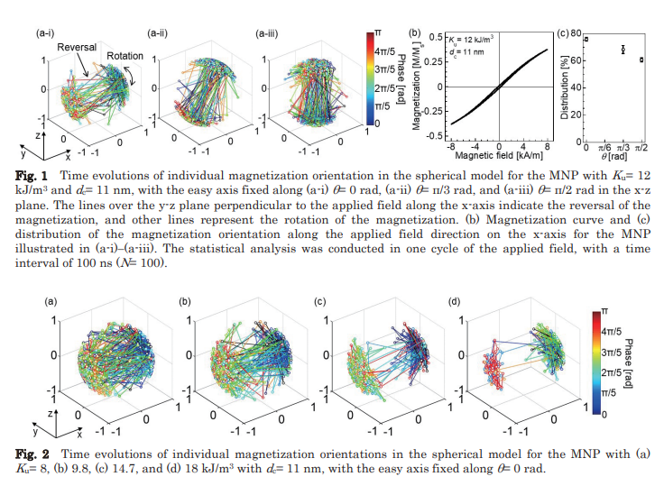
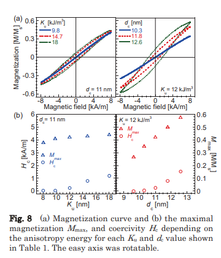
【コメント】：磁性ナノ粒子の熱揺らぎの異方性の関係をLLGシミュレーションで明らかに。沢山のシミュレーションを繰り返したようで苦労話の多い論文の様です。
【用語】異方性エネルギー：ある特定の方向に沿って磁化が安定するようなエネルギーである。一般に、強磁性物質は結晶構造や形状などによって異方性を持つ。異方性エネルギーは、ナノ粒子の強磁性領域や超常磁性領域の境界を決める重要な要素である。ランジュバン動力学：確率的な力学系を記述する理論である。ナノ粒子の場合、温度や外部電界などによってランダムな力が働くため、ランジュバン方程式を用いて磁化の時間発展を表すことができる。ネール緩和とブラウン緩和：ナノ粒子の磁化の回転運動に関する二つの機構である。ネール緩和は、ナノ粒子の形状や結晶構造によって決まる易軸に対して磁化が回転する現象である。ブラウン緩和は、ナノ粒子自体が流体中で回転し、その際に磁化が易軸に拘束される現象である。
【方法】本研究では、強磁性ナノ粒子のコアサイズと異方性定数を変化させて、異方性エネルギーと熱エネルギーの比（ξ）を調整した。ナノ粒子の飽和磁化や温度は一定とした。ナノ粒子の磁化と易軸の時間発展を数値シミュレーションするために、ランダウ・リフシッツ・ギルバート方程式を用いた。この方程式は、外部電界や異方性電界によるトルクと、温度によるランダムなトルクと摩擦力を考慮している。固定された易軸と回転する易軸の場合について、それぞれ別の方程式を解いた。固定された易軸の場合は、磁化の回転運動だけを考えた。回転する易軸の場合は、磁化と易軸の両方の回転運動を考えた。交流電界をx軸に沿って印加し、ナノ粒子の個々の磁化と易軸の三次元的な振る舞いを観察した。また、交流感受率や交流磁化曲線などの実験的に測定可能な量も計算した。異方性エネルギーとコアサイズが、ナノ粒子の超常磁性領域と強磁性領域の移行点や、交流電界に対する応答に及ぼす影響を評価した。また、周波数が高くなると、異方性エネルギー障壁を越えられない残留磁化が生じることを示した。
【新規性】本研究は、強磁性ナノ粒子の個々の振る舞いを数値シミュレーションで詳細に解析し、異方性エネルギーとコアサイズが超常磁性領域と強磁性領域の移行点や交流電界への応答に及ぼす影響を明らかにした。本研究は、固定された易軸と回転する易軸の場合におけるランジュバン動力学を比較し、回転する易軸ではブラウン緩和が位相遅れやコアシビティに寄与することを示した。本研究は、強磁性ナノ粒子の個々の振る舞いを数値シミュレーションで詳細に解析し、異方性エネルギーとコアサイズが超常磁性領域と強磁性領域の移行点や交流電界への応答に及ぼす影響を明らかにした。本研究は、固定された易軸と回転する易軸の場合におけるランジュバン動力学を比較し、回転する易軸ではブラウン緩和が位相遅れやコアシビティに寄与することを示した。
【用語】異方性エネルギー：ある特定の方向に沿って磁化が安定するようなエネルギーである。一般に、強磁性物質は結晶構造や形状などによって異方性を持つ。異方性エネルギーは、ナノ粒子の強磁性領域や超常磁性領域の境界を決める重要な要素である。ランジュバン動力学：確率的な力学系を記述する理論である。ナノ粒子の場合、温度や外部電界などによってランダムな力が働くため、ランジュバン方程式を用いて磁化の時間発展を表すことができる。ネール緩和とブラウン緩和：ナノ粒子の磁化の回転運動に関する二つの機構である。ネール緩和は、ナノ粒子の形状や結晶構造によって決まる易軸に対して磁化が回転する現象である。ブラウン緩和は、ナノ粒子自体が流体中で回転し、その際に磁化が易軸に拘束される現象である。
【方法】本研究では、強磁性ナノ粒子のコアサイズと異方性定数を変化させて、異方性エネルギーと熱エネルギーの比（ξ）を調整した。ナノ粒子の飽和磁化や温度は一定とした。ナノ粒子の磁化と易軸の時間発展を数値シミュレーションするために、ランダウ・リフシッツ・ギルバート方程式を用いた。この方程式は、外部電界や異方性電界によるトルクと、温度によるランダムなトルクと摩擦力を考慮している。固定された易軸と回転する易軸の場合について、それぞれ別の方程式を解いた。固定された易軸の場合は、磁化の回転運動だけを考えた。回転する易軸の場合は、磁化と易軸の両方の回転運動を考えた。交流電界をx軸に沿って印加し、ナノ粒子の個々の磁化と易軸の三次元的な振る舞いを観察した。また、交流感受率や交流磁化曲線などの実験的に測定可能な量も計算した。異方性エネルギーとコアサイズが、ナノ粒子の超常磁性領域と強磁性領域の移行点や、交流電界に対する応答に及ぼす影響を評価した。また、周波数が高くなると、異方性エネルギー障壁を越えられない残留磁化が生じることを示した。
【新規性】本研究は、強磁性ナノ粒子の個々の振る舞いを数値シミュレーションで詳細に解析し、異方性エネルギーとコアサイズが超常磁性領域と強磁性領域の移行点や交流電界への応答に及ぼす影響を明らかにした。本研究は、固定された易軸と回転する易軸の場合におけるランジュバン動力学を比較し、回転する易軸ではブラウン緩和が位相遅れやコアシビティに寄与することを示した。本研究は、強磁性ナノ粒子の個々の振る舞いを数値シミュレーションで詳細に解析し、異方性エネルギーとコアサイズが超常磁性領域と強磁性領域の移行点や交流電界への応答に及ぼす影響を明らかにした。本研究は、固定された易軸と回転する易軸の場合におけるランジュバン動力学を比較し、回転する易軸ではブラウン緩和が位相遅れやコアシビティに寄与することを示した。
強磁性材料におけるトポロジカル磁気構造のフェーズフィールドモデル
強磁性材料におけるドメイン壁、渦、スカイルミオンといったトポロジカル磁気構造の形成と進化に関するフェーズフィールド（PF）モデルを紹介した。時間依存性ギンツブルグ・ランダウ方程式、ランダウ・リフシッツ・ギルバート方程式、弾性動力学方程式、マクスウェル方程式を組み合わせたPFモデルを開発し、有限要素法で数値的に解いた。スピントランスファートルクとスピン軌道トルクを考慮したPFモデルも提案し、スピン偏極電流がトポロジカル磁気構造に及ぼす影響を調べた。PFモデルのシミュレーション結果は実験や他の数値手法とよく一致し、PFモデルの妥当性と有用性を示した。PFモデルは任意の形状や境界条件の強磁性材料に適用できるため、トポロジカル磁気構造の制御や応用に貢献できると期待される。
Published 2022-11-07
Phase field modeling of topological magnetic structures in ferromagnetic materials: domain wall, vortex, and skyrmion
Jiajun Sun et al. (Zhejiang University, China)
Acta Mechanica 234, 283–311 (2023)
Phase field modeling of topological magnetic structures in ferromagnetic materials: domain wall, vortex, and skyrmion
Jiajun Sun et al. (Zhejiang University, China)
Acta Mechanica 234, 283–311 (2023)
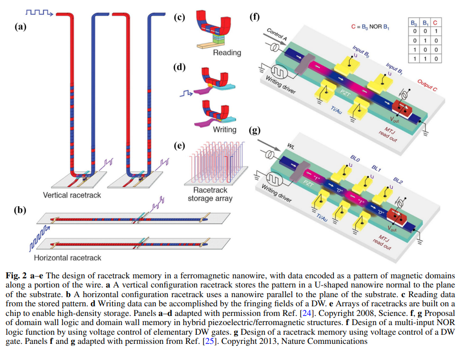
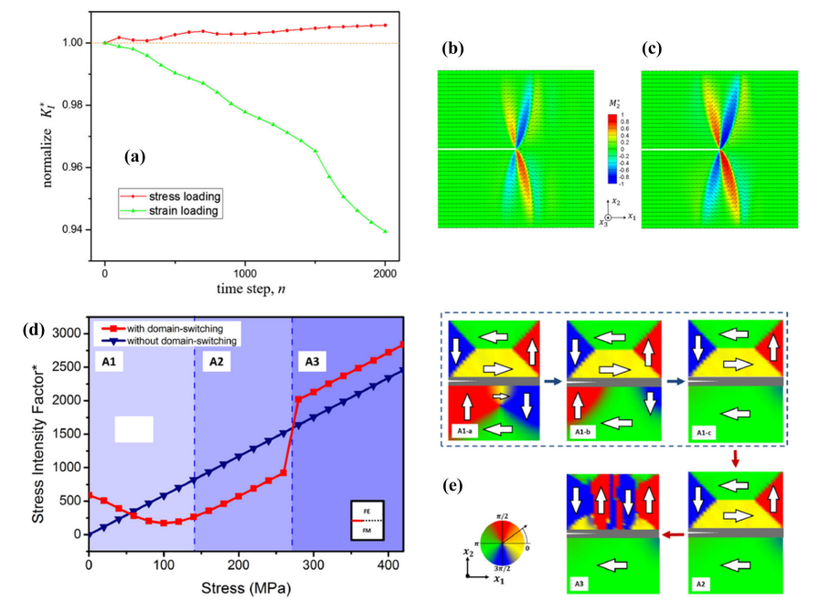
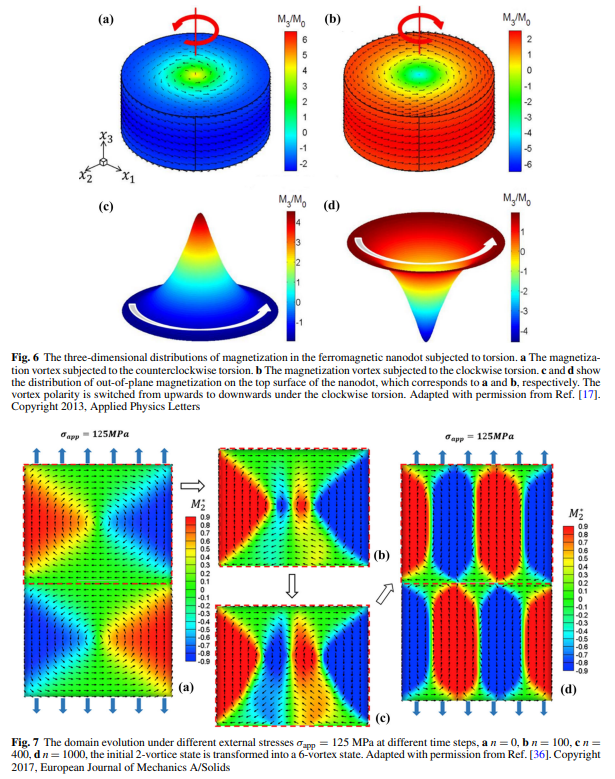
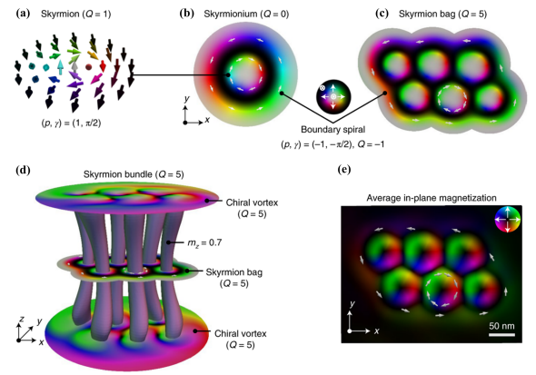
【コメント】：フェーズフィールド（PF）モデルをベースに様々な物理現象をマルチスケールに連成した素晴らしい論文。今後の研究の参考にしたい。
【用語】トポロジカル磁気構造：強磁性材料内部で形成される特定の磁化分布や磁区構造のことで、トポロジー的欠陥を持つ。トポロジー的欠陥とは、場の分布における特異点や連続的な変化が起こる領域のことである。トポロジカル磁気構造はその存在や変化によって物質の物理的性質や応答を大きく変えることができる。例えば、ドメイン壁は隣接する異なる方向の磁区間の境界であり、渦は平面内で螺旋状に回転する磁化分布であり、スカイルミオンは球面上で回転する磁化分布である。これらのトポロジカル磁気構造はそれぞれ異なるトポロジカル数や巻き数で特徴づけられる。PFモデル：物質中の相境界やドメイン壁などを拡散的な界面として扱う数値的手法の一つである。PFモデルでは、物質中の任意の点における秩序変数（例えば磁化や歪みなど）を連続的な場の変数として定義し、その時間発展や空間分布を支配する方程式を導く。PFデルの方程式は物質の自由エネルギーの最小化原理に基づいており、自由エネルギーは局所的なエネルギーと非局所的な勾配エネルギーの和で表される。PFモデルは複雑な微細構造の進化や非線形な物理現象をシミュレーションするのに適しており、多くの材料システムに応用されている。スピントランスファートルクとスピン軌道トルク：強磁性材料に流れるスピン偏極電流が磁化に及ぼすトルクのことである。スピントランスファートルクは、電流中の運動する電子のスピン角運動量が局在する電子のスピン角運動量に交換結合することで生じる。スピントランスファートルクは、磁化の方向を反転させたり、ドメイン壁やスカイルミオンなどのトポロジカル磁気構造を移動させたりすることができる。一方、スピン軌道トルクは、電流中の電子が格子と相互作用することで生じる。スピン軌道トルクは、磁化に対して垂直な方向にトルクをかけることができるため、磁化の回転や切り替えを効率的に制御することができる。PF方程式や他の支配方程式を有限要素法で数値的に解くために、八節点立方体要素を用いて強磁性材料をメッシュ分割した。各節点には変位、磁気ポテンシャル、磁化の3つの自由度がある。変位、磁気ポテンシャル、磁化は各要素内で節点変数の線形補間によって求められる。 弱形式の支配方程式を行列形式で表すと、節点変数に関する非線形方程式が得られる。この非線形方程式はニュートン法で反復的に解いた。ニュートン法では、残差方程式を線形化し、未知の節点変数の増分を求める。増分を用いて節点変数を更新し、収束条件を満たすまで反復する。このようにして、強磁性材料におけるトポロジカル磁気構造の形成と進化をPFモデルでシミュレーションすることができる。PFモデルのシミュレーション結果は実験や他の数値手法とよく一致し、PFモデルの妥当性と有用性を示した。
【方法】本研究では、強磁性材料におけるトポロジカル磁気構造の形成と進化をシミュレーションするために、PFモデルを用いた。PFモデルでは、磁化を秩序変数として定義し、その時間発展は時間依存性ギンツブルグ・ランダウ方程式やランダウ・リフシッツ・ギルバート方程式で記述した。磁化の空間分布は、交換エネルギー、磁気静的エネルギー、異方性エネルギー、磁気弾性エネルギー、ジャロシンスキー・モリア相互作用エネルギーなどの寄与からなる自由エネルギーの最小化によって決まる。強磁性材料における応力や磁束密度も考慮するために、弾性動力学方程式やマクスウェル方程式も導入した。スピントランスファートルクやスピン軌道トルクを考慮する場合は、それらの効果を表す項をPF方程式に追加した。
【新規性】本研究は、強磁性材料におけるトポロジカル磁気構造のPFモデルを体系的に紹介し、その応用例を多数示した。特に、PFモデルによってトポロジカル磁気構造の動的特性や周波数特性を明らかにし、外部場や電流による制御方法を提案した。また、トポロジカル磁気構造とスピン波との相互作用やカップリングをPFモデルで解析し、新たな物理現象や応用可能性を探求した。PFモデルを任意の形状や境界条件の強磁性材料に適用できることを示し、トポロジカル磁気構造の設計や最適化に貢献した。
【用語】トポロジカル磁気構造：強磁性材料内部で形成される特定の磁化分布や磁区構造のことで、トポロジー的欠陥を持つ。トポロジー的欠陥とは、場の分布における特異点や連続的な変化が起こる領域のことである。トポロジカル磁気構造はその存在や変化によって物質の物理的性質や応答を大きく変えることができる。例えば、ドメイン壁は隣接する異なる方向の磁区間の境界であり、渦は平面内で螺旋状に回転する磁化分布であり、スカイルミオンは球面上で回転する磁化分布である。これらのトポロジカル磁気構造はそれぞれ異なるトポロジカル数や巻き数で特徴づけられる。PFモデル：物質中の相境界やドメイン壁などを拡散的な界面として扱う数値的手法の一つである。PFモデルでは、物質中の任意の点における秩序変数（例えば磁化や歪みなど）を連続的な場の変数として定義し、その時間発展や空間分布を支配する方程式を導く。PFデルの方程式は物質の自由エネルギーの最小化原理に基づいており、自由エネルギーは局所的なエネルギーと非局所的な勾配エネルギーの和で表される。PFモデルは複雑な微細構造の進化や非線形な物理現象をシミュレーションするのに適しており、多くの材料システムに応用されている。スピントランスファートルクとスピン軌道トルク：強磁性材料に流れるスピン偏極電流が磁化に及ぼすトルクのことである。スピントランスファートルクは、電流中の運動する電子のスピン角運動量が局在する電子のスピン角運動量に交換結合することで生じる。スピントランスファートルクは、磁化の方向を反転させたり、ドメイン壁やスカイルミオンなどのトポロジカル磁気構造を移動させたりすることができる。一方、スピン軌道トルクは、電流中の電子が格子と相互作用することで生じる。スピン軌道トルクは、磁化に対して垂直な方向にトルクをかけることができるため、磁化の回転や切り替えを効率的に制御することができる。PF方程式や他の支配方程式を有限要素法で数値的に解くために、八節点立方体要素を用いて強磁性材料をメッシュ分割した。各節点には変位、磁気ポテンシャル、磁化の3つの自由度がある。変位、磁気ポテンシャル、磁化は各要素内で節点変数の線形補間によって求められる。 弱形式の支配方程式を行列形式で表すと、節点変数に関する非線形方程式が得られる。この非線形方程式はニュートン法で反復的に解いた。ニュートン法では、残差方程式を線形化し、未知の節点変数の増分を求める。増分を用いて節点変数を更新し、収束条件を満たすまで反復する。このようにして、強磁性材料におけるトポロジカル磁気構造の形成と進化をPFモデルでシミュレーションすることができる。PFモデルのシミュレーション結果は実験や他の数値手法とよく一致し、PFモデルの妥当性と有用性を示した。
【方法】本研究では、強磁性材料におけるトポロジカル磁気構造の形成と進化をシミュレーションするために、PFモデルを用いた。PFモデルでは、磁化を秩序変数として定義し、その時間発展は時間依存性ギンツブルグ・ランダウ方程式やランダウ・リフシッツ・ギルバート方程式で記述した。磁化の空間分布は、交換エネルギー、磁気静的エネルギー、異方性エネルギー、磁気弾性エネルギー、ジャロシンスキー・モリア相互作用エネルギーなどの寄与からなる自由エネルギーの最小化によって決まる。強磁性材料における応力や磁束密度も考慮するために、弾性動力学方程式やマクスウェル方程式も導入した。スピントランスファートルクやスピン軌道トルクを考慮する場合は、それらの効果を表す項をPF方程式に追加した。
【新規性】本研究は、強磁性材料におけるトポロジカル磁気構造のPFモデルを体系的に紹介し、その応用例を多数示した。特に、PFモデルによってトポロジカル磁気構造の動的特性や周波数特性を明らかにし、外部場や電流による制御方法を提案した。また、トポロジカル磁気構造とスピン波との相互作用やカップリングをPFモデルで解析し、新たな物理現象や応用可能性を探求した。PFモデルを任意の形状や境界条件の強磁性材料に適用できることを示し、トポロジカル磁気構造の設計や最適化に貢献した。
不完全性は0Kではない：結晶中の点欠陥の自由エネルギー
・結晶中の点欠陥の形成に関する自由エネルギーの理論的記述を紹介する。点欠陥の形成自由エネルギーは、エンタルピーとエントロピーのバランスによって決まる。
・有限温度での欠陥形成の自由エネルギーには、構成的（構造的、電子的、スピン的）および振動的な寄与がある。特に、メタ安定な欠陥構造や非調和効果を正確に取り扱うことは、高温下での欠陥挙動や電気化学的反応性などに重要である。
・メタ安定な欠陥構造を考慮するための課題や、機械学習力場や熱力学的積分などの進歩を議論する。
・欠陥形成の希薄限界を超えるためのボトルネックを指摘する。具体的には、点欠陥の形成自由エネルギーを計算するためには、高度な電子構造計算や統計力学的手法が必要であり、計算コストが非常に高くなる。また、点欠陥の濃度が高くなると、点欠陥同士の相互作用や集合体を考慮する必要があり、多体問題への取り組みも重要である。
・計算材料化学における正確な欠陥予測を支援するために必要な開発であることを示した。
・有限温度での欠陥形成の自由エネルギーには、構成的（構造的、電子的、スピン的）および振動的な寄与がある。特に、メタ安定な欠陥構造や非調和効果を正確に取り扱うことは、高温下での欠陥挙動や電気化学的反応性などに重要である。
・メタ安定な欠陥構造を考慮するための課題や、機械学習力場や熱力学的積分などの進歩を議論する。
・欠陥形成の希薄限界を超えるためのボトルネックを指摘する。具体的には、点欠陥の形成自由エネルギーを計算するためには、高度な電子構造計算や統計力学的手法が必要であり、計算コストが非常に高くなる。また、点欠陥の濃度が高くなると、点欠陥同士の相互作用や集合体を考慮する必要があり、多体問題への取り組みも重要である。
・計算材料化学における正確な欠陥予測を支援するために必要な開発であることを示した。
19 Jul 2023
Imperfections are not 0 K: free energy of point defects in crystals
Irea Mosquera-Lois et al. (Imperial College London, UK)
http://arxiv.org/abs/2307.10451
Imperfections are not 0 K: free energy of point defects in crystals
Irea Mosquera-Lois et al. (Imperial College London, UK)
http://arxiv.org/abs/2307.10451
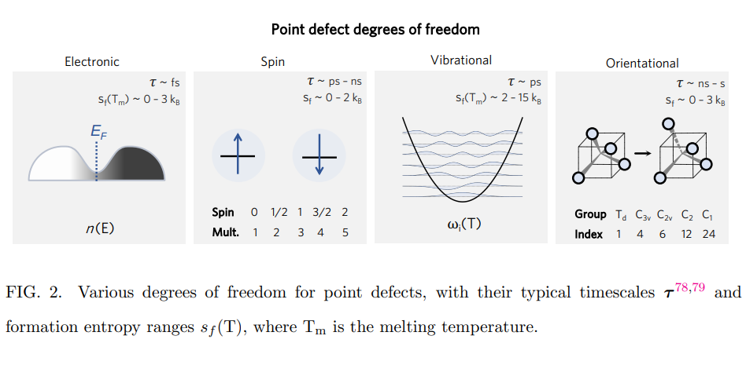
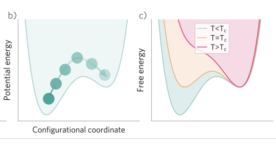
コメント：スキルミオンの制御は難しいイメージがあるが、層間スタッキングやMnドープという簡単な手法で反スキルミオンを実現している点は面白いと思う。
補足：点欠陥：結晶中の原子が規則的な格子位置からずれたり、欠けたりした状態。空孔や間隙原子、置換原子や不純物原子などが例として挙げられる。点欠陥は結晶の物理的・化学的性質に大きな影響を与える。自由エネルギー：系が平衡状態にあるときに最小となる熱力学的ポテンシャル。自由エネルギーが低いほど系は安定である。自由エネルギーは内部エネルギーから温度と圧力に依存するエントロピー項を差し引いたものであり、欠陥形成においてはエンタルピーと構成エントロピーから求められる。熱力学的積分：分子動力学シミュレーションを用いて自由エネルギー差を計算する方法。参照系と目標系の間に連続的な変化を導入するパラメータを用いて、自由エネルギー差を積分で求める。非調和効果を考慮した欠陥形成の自由エネルギー計算に有効である。
補足：点欠陥：結晶中の原子が規則的な格子位置からずれたり、欠けたりした状態。空孔や間隙原子、置換原子や不純物原子などが例として挙げられる。点欠陥は結晶の物理的・化学的性質に大きな影響を与える。自由エネルギー：系が平衡状態にあるときに最小となる熱力学的ポテンシャル。自由エネルギーが低いほど系は安定である。自由エネルギーは内部エネルギーから温度と圧力に依存するエントロピー項を差し引いたものであり、欠陥形成においてはエンタルピーと構成エントロピーから求められる。熱力学的積分：分子動力学シミュレーションを用いて自由エネルギー差を計算する方法。参照系と目標系の間に連続的な変化を導入するパラメータを用いて、自由エネルギー差を積分で求める。非調和効果を考慮した欠陥形成の自由エネルギー計算に有効である。
ハロゲン化物ペロブスカイトの自由エネルギー形貌の解明：CsPbBr3とMAPbI3の不安定性と相転移特性
・ハロゲン化物ペロブスカイトは温度によって立方晶、四方晶、斜方晶などの異なる結晶構造を取るが、その自由エネルギー形貌は未解明だった。
・本研究では、CsPbBr3とMAPbI3という二つの代表的なハロゲン化物ペロブスカイトについて、機械学習に基づく分子力場を用いて分子動力学シミュレーションと傘サンプリング法を行った。その結果、CsPbBr3では立方晶から四方晶への相転移が一次相転移であることを確認し、斜方晶から四方晶への相転移は連続相転移であることを示した。
・MAPbI3では、有機分子MAが持つ配向自由度が相転移や不安定性に影響を与えることを見出した。特に、斜方晶から四方晶への相転移は大きな自由エネルギー障壁を持ち、斜方晶は高温でもメタ安定な状態になることがわかった。また、MAPbI3では実験で観測されていないメタ安定な四方晶構造（a −a −c 0）も発見し、その存在可能性や動力学的挙動について議論した。
・本研究では、CsPbBr3とMAPbI3という二つの代表的なハロゲン化物ペロブスカイトについて、機械学習に基づく分子力場を用いて分子動力学シミュレーションと傘サンプリング法を行った。その結果、CsPbBr3では立方晶から四方晶への相転移が一次相転移であることを確認し、斜方晶から四方晶への相転移は連続相転移であることを示した。
・MAPbI3では、有機分子MAが持つ配向自由度が相転移や不安定性に影響を与えることを見出した。特に、斜方晶から四方晶への相転移は大きな自由エネルギー障壁を持ち、斜方晶は高温でもメタ安定な状態になることがわかった。また、MAPbI3では実験で観測されていないメタ安定な四方晶構造（a −a −c 0）も発見し、その存在可能性や動力学的挙動について議論した。
22 Jul 2023
Revealing the free energy landscape of halide perovskites: Metastability and transition characters in CsPbBr3 and MAPbI3
Erik Fransson et al. (Chalmers University of Technology, Sweden)
https://arxiv.org/abs/2307.12100v1
Revealing the free energy landscape of halide perovskites: Metastability and transition characters in CsPbBr3 and MAPbI3
Erik Fransson et al. (Chalmers University of Technology, Sweden)
https://arxiv.org/abs/2307.12100v1
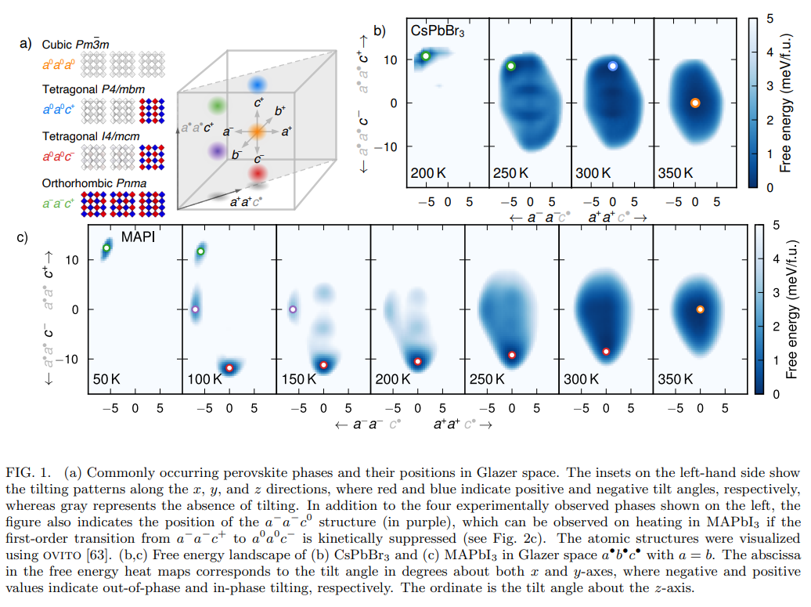
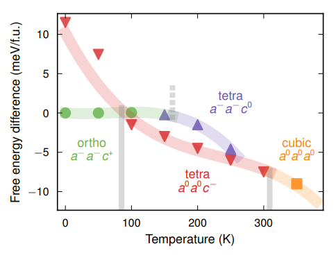
コメント：ハロゲン化物ペロブスカイトという太陽電池に有望な材料の自由エネルギー形貌を計算物理学と化学の手法で明らかにして、どう他の材料系と比較していくのか興味があります。
補足：ハロゲン化物ペロブスカイト：ABX3型の結晶構造を持つ化合物で、Aはアルカリ金属や有機分子（例えばMA=CH3NH3）、Bは鉛や錫などの金属元素、Xはハロゲン元素（フッ素、塩素、臭素、ヨウ素）である。光吸収や電荷移動などの特性が優れており、太陽電池や発光ダイオードなどの応用が期待されている。自由エネルギー形貌：物質の状態や構造を表す変数（例えば温度や圧力、分子の配向など）に対する自由エネルギーの分布を示す図。自由エネルギーが最も低いところが安定な状態や構造であり、自由エネルギーが高いところは不安定な状態や構造である。自由エネルギー形貌は相転移や反応経路などの物理化学的現象を理解するために重要である。傘サンプリング法：分子動力学シミュレーションで用いられるサンプリング法の一種で、自由エネルギー形貌の探索を効率的に行うために、あらかじめ選んだ変数（例えば分子の変形や距離など）に沿って系にバイアスポテンシャル（例えば調和ポテンシャルなど）をかける方法。バイアスポテンシャルによって系は安定な状態から不安定な状態へと移動しやすくなり、自由エネルギー形貌の全体像を得ることができる。
補足：ハロゲン化物ペロブスカイト：ABX3型の結晶構造を持つ化合物で、Aはアルカリ金属や有機分子（例えばMA=CH3NH3）、Bは鉛や錫などの金属元素、Xはハロゲン元素（フッ素、塩素、臭素、ヨウ素）である。光吸収や電荷移動などの特性が優れており、太陽電池や発光ダイオードなどの応用が期待されている。自由エネルギー形貌：物質の状態や構造を表す変数（例えば温度や圧力、分子の配向など）に対する自由エネルギーの分布を示す図。自由エネルギーが最も低いところが安定な状態や構造であり、自由エネルギーが高いところは不安定な状態や構造である。自由エネルギー形貌は相転移や反応経路などの物理化学的現象を理解するために重要である。傘サンプリング法：分子動力学シミュレーションで用いられるサンプリング法の一種で、自由エネルギー形貌の探索を効率的に行うために、あらかじめ選んだ変数（例えば分子の変形や距離など）に沿って系にバイアスポテンシャル（例えば調和ポテンシャルなど）をかける方法。バイアスポテンシャルによって系は安定な状態から不安定な状態へと移動しやすくなり、自由エネルギー形貌の全体像を得ることができる。